Prof. Yanmin Zhu
Seeing the invisible — with physics and AI
I am a Presidential Research Assistant Professor at The University of Hong Kong, jointly appointed in the Department of Electrical and Computer Engineering and the School of Biomedical Engineering, and an Adjunct Professor in Computer Science at the University of Massachusetts Boston. Prior to that, I was a Postdoctoral Associate at MIT (Department of Mechanical Engineering), working with Prof. Loza F. Tadesse (Forbes 30 under 30) and Prof. George Barbastathis.
My group works at the intersection of physical optics and artificial intelligence: we jointly design optical hardware, physics-informed algorithms, and edge computing systems to build imaging and sensing instruments that are label-free, real-time, high-throughput, and deployable in the field. Our systems have been applied to disease early warning, wearable body-fluid diagnostics, nanoplastic pollution monitoring, and cross-modality materials characterization.
I received my Ph.D. from The University of Hong Kong (computational imaging) under the supervision of Prof. Edmund Y. Lam and Prof. Hayden K.H., So, MSc in Optics and Photonics from Imperial College London (awarded with Merit) under the supervision of Prof. Mark Neil and Prof. Christopher Dunsby, and BSc in Electronic Engineering from KU Leuven (Cum Laude) under the supervision of Prof. Lucca Geurts.
I am also a technology translator: co-founder and technical leader of SpectroGen.AI (USA) and Director/CTO of Holosense Technology Co. Ltd (Hong Kong), turning laboratory breakthroughs into instruments and software products.
Education
- Ph.D., Electrical & Computer Engineering — The University of Hong Kong
Computational imaging - MSc, Optics and Photonics — Imperial College London
Awarded Merit Honour Degree - BSc, Electronic Engineering — KU Leuven, Belgium
Awarded Cum Laude Honour Degree
Appointments
- Presidential Research Assistant Professor — HKU (ECE & School of Biomedical Engineering)
- Adjunct Professor — UMass Boston, Computer Science
- Postdoctoral Associate — MIT, Mechanical Engineering
- Co-founder & Leader — SpectroGen.AI, USA
- Director & CTO — Holosense Technology Co. Ltd, HK
Selected breakthroughs
From a generative "virtual spectrometer" featured in Matter (Cell Press) to single-nanoparticle speckle holography, our work has been recognised by international invention exhibitions, media coverage, and industry adoption.
2026
SpectroGen — a physics-informed generative AI that acts as a “virtual spectrometer”
Generates and translates spectra across modalities (e.g., Raman ↔ XRD ↔ IR) from physical priors instead of paired data, dramatically accelerating materials characterization and discovery. Covered by international science media as “The Virtual Spectrometer” and commercialised through SpectroGen.AI; protected by US provisional patent.
Photon.
(rev.)
Label-free single-nanoparticle deep speckle holography
Turns coherent speckle, usually treated as noise, into an information channel enabling single-nanoparticle detection without labels, with a companion physics-informed framework for label-free spatial phenotyping.
Eng.
2024
SPLASH: smart polarization & spectroscopic holography for real-time microplastics identification
A field-deployable instrument that identifies plastic types in real time and label-free, even in turbid water. Recognised with a Silver Medal at the 49th International Exhibition of Inventions of Geneva (2024) and reported by HKU as a novel imaging technology for accurate microplastic detection; now commercialised via Holosense Technology.
Cited
Setting the agenda for deep learning in holography
Our review series has become reference reading for the deep-learning-for-holography community, complemented by invited papers in Journal of Physics: Photonics and repeated invitations to speak at SPIE Photonics West and Optica Digital Holography meetings.
AI for pandemic prevention — US$500,000 MIT–Google research programme
Energy- and data-efficient machine learning for rapid point-of-need diagnostics addressing climate-change-induced global health threats — bridging optical hardware, edge computing, and generative AI.
Recent news
- 2026Invited to attend the “Beijing Visit for Hong Kong Talents” exchange session at the Beijing Academy of Social Sciences, engaging with fellow Hong Kong scholars on regional development, cultural innovation, healthcare and frontier technology. Read the report Invited
- 2026Joined the “Beijing Visit for Hong Kong Talents” innovation exchange in Zhongguancun, exploring opportunities for deeper collaboration between Hong Kong research teams, Beijing enterprises and technology platforms. Read the report Science & Innovation
- 2026Visited Zhongguancun Life Science Park as part of the “Beijing Visit for Hong Kong Talents” programme, learning about Beijing’s life-science and AI-enabled biomedical innovation ecosystem and its potential for cross-border research translation. Read the report AI for Health
- 2026PINSA, a physics-informed neural spectral imaging method for plastisphere differentiation, has been published in ACS Photonics. Journal Publication
- 2026Stokes-consistent computational polarimetric reconstruction for label-free imaging of nanoplastic-induced perturbations has been published in Optics Express. Journal Publication
- 2025MESH, a metasurface-encoded single-pixel hyperspectral imaging approach, has been published in Advanced Photonics Research. Optics & Photonics
- 2026SpectroGen published in Matter (Cell Press) and covered by international media: “Checking the quality of materials just got easier with a new AI tool”, “SpectroGen: The Virtual Spectrometer”, “AI accelerates materials discovery”. Media
- 2026Invited review “Advanced Deep Learning for Digital Holography: A Review” has been published in Progress in Quantum Electronics.
- 2026Our latest work HoloSpec: Dispersion-Based 4D Computational Holographic Hyperspectral Imaging has been published in Laser & Photonics Reviews. IF > 9
- 2026Two contactless cardiovascular sensing papers published on npj Digital Medicine and npj Cardiovascular Health.Nature Portfolio
- 2026Co-founded SpectroGen.AI (USA) as Co-founder.
- 2026Appointed Editor, Frontiers in Lab on a Chip Technologies.
- 2026Serving on the Program Committee of IEEE/ACM CCGrid 2026.
- 2025Winner of the 3rd Hong Kong SciTech Young Pioneer Award — Future Innovation Scientist. Award
- 2025Shortlisted for the 3rdHKIS Young Scientist Award 2025.Award
- 2025Invited speaker at SPIE Photonics West — AI and Optical Data Sciences VI and the HKU–KAUST Joint Workshop on Computational Imaging.
- 2025Attended the “Women Power United: Connecting Wuxi with the Greater Bay Area” women’s science and innovation exchange and promotion event in Shenzhen, representing The University of Hong Kong and sharing work at the intersection of AI, advanced optics and intelligent diagnosis. Read the report Science & Innovation
- 2025Attended the Wuxi–Hong Kong Science and Innovation Exchange and Cooperation Forum in Xishan, Wuxi, representing The University of Hong Kong in the Hong Kong innovation project showcase and sharing research spanning AI and advanced technology. Read the report Science & Innovation
- 2024Awarded the Shanghai Baiyulan Talent Award. Award
- 2024Awarded the Silver Medal at the 49th International Exhibition of Inventions of Geneva. Award
- 2024SPLASH published in Communications Engineering (Springer Nature); Holosense Technology Co. Ltd founded in Hong Kong (Director & CTO).
Three pillars, one philosophy: co-design optics + AI
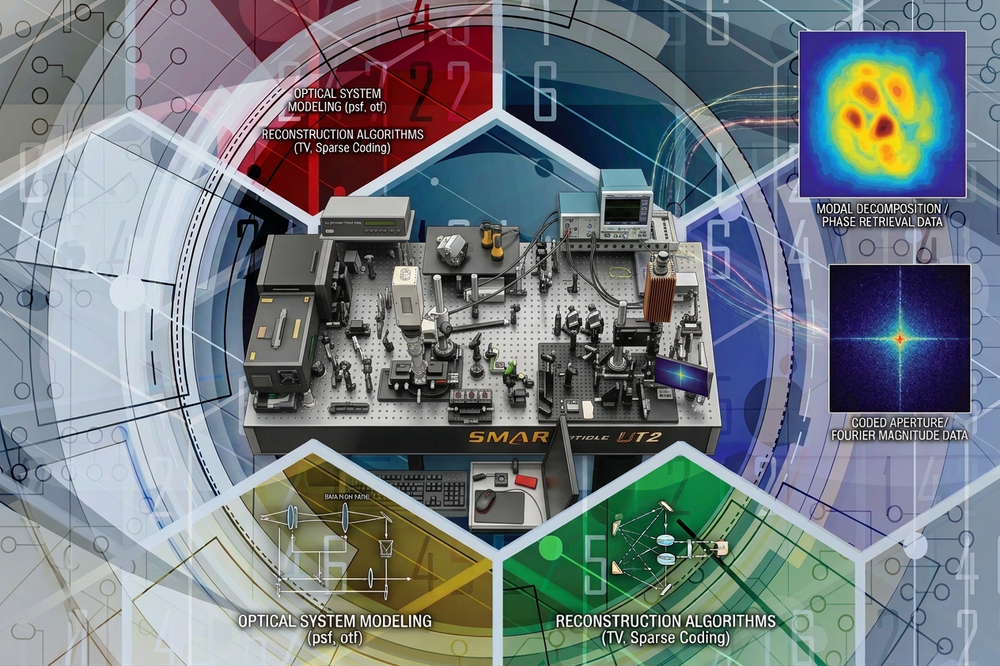
Computational Imaging & Intelligent Photonics
Instruments that reveal what conventional microscopes cannot.
- Digital & polarization holography
- Speckle and coherent imaging
- Image-based phenotyping
- Spectroscopic modality deconvolution & transfer
- Healthcare diagnosis & disease early warning
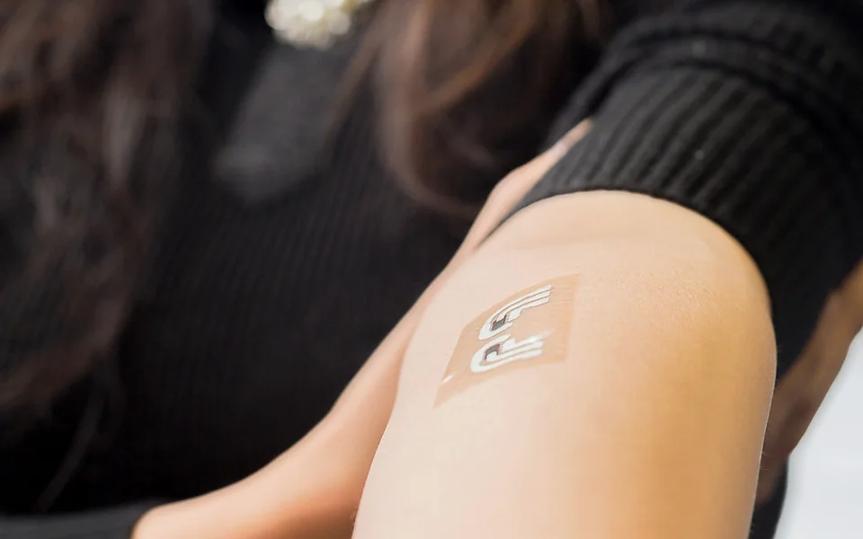
Optical Computing & Wearable / Edge AI
Moving intelligence into the optics and to the point of need.
- Diffractive optical neural networks
- Wearable body-fluid (sweat) diagnostics
- Portable nanoplastics pollution monitors
- Edge-GPU, real-time high-throughput pipelines
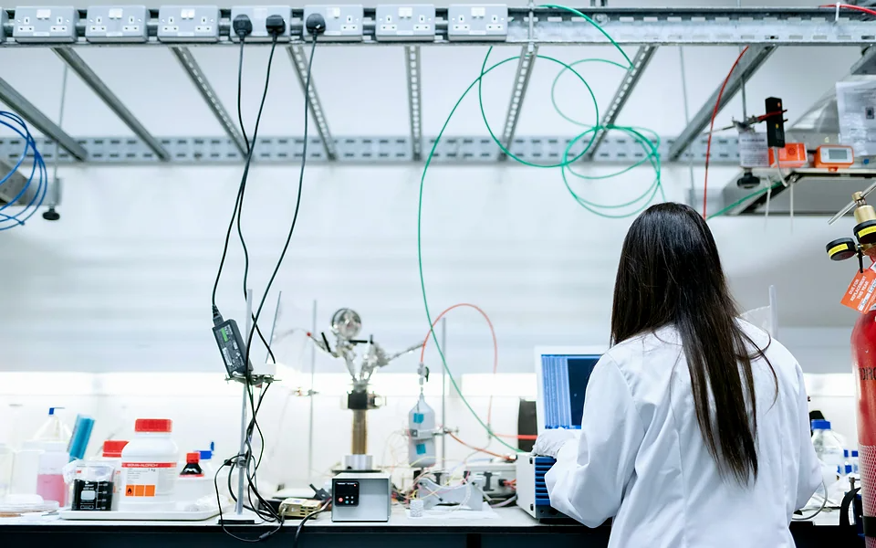
Physics-Informed & Generative AI
Models that obey physics — and therefore generalise.
- Generative AI for spectra & images
- Physics-informed neural networks
- Transfer / zero-shot / untrained learning
- Descattering, low-light & lensless imaging
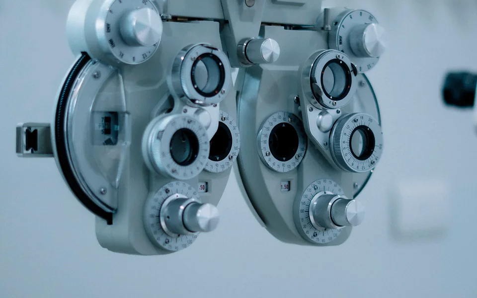
AI for Healthcare
Contactless physiological monitoring (npj Digital Medicine, npj Cardiovascular Health), ophthalmic screening devices, wearable sweat analytics for early health surveillance.
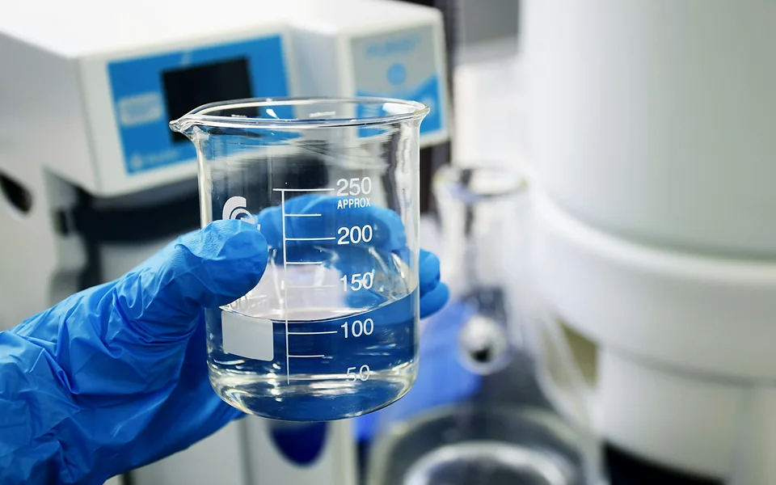
AI for Environment
End-to-end optical + AI platforms for micro-/nano-plastic detection, plastisphere differentiation, and 4D phenotyping of nanoplastic impacts on aquatic organisms.
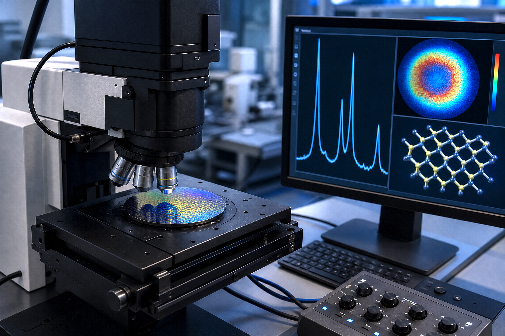
AI for Materials & Science
Cross-modality spectral prediction and interpretation (SpectroGen), SERS mechanism studies, metasurface-encoded hyperspectral imaging, all-optical classification networks.
Journal articles & conference papers
Underlined names indicate my authorship. * equal contribution. Use the filters to browse by category.
Peer-reviewed journal articles 2020 – 2026
- Yanmin Zhu, L. F. Tadesse, “SpectroGen: A physically informed generative artificial intelligence for accelerated cross-modality spectroscopic materials characterization,” Matter, 9(1), 102434, 2026, Cell Press. Cell PressMedia covered
- Y. Zhang, N. Chen, Yanmin Zhu, J. Chen, C. Wang, T. Zeng, E. Y. Lam, “Advanced deep learning for digital holography: A review,” Progress in Quantum Electronics, 109, 100638, 2026. Invited review
- J. Chen, Y. Li, Yanmin Zhu, E. Y. Lam, “HoloSpec: Dispersion-based 4D computational holographic hyperspectral imaging,” Laser & Photonics Reviews, e71516, 2026. IF > 9
- S. Li, Y. Tian, Yanmin Zhu, E. Y. Lam, M. Elgendi, “Adaptive physiologically constrained signal correction improves contactless heart rate monitoring,” npj Digital Medicine, 9, 233, 2026. Nature Portfolio
- S. Li, M. Elgendi, Yanmin Zhu, E. Y. Lam, C. Menon, “Lighting effects on optimal facial regions for remote heart rate measurement,” npj Cardiovascular Health, 3(40), 2026. Nature Portfolio
- J. Chen, Yanmin Zhu, Y. Li, Y. Cao, E. Y. Lam, “PINSA: Physics-informed neural spectral imaging for plastisphere differentiation,” ACS Photonics, 2026.
- Y. Li, Yanmin Zhu, J. Chen, E. Y. Lam, “Stokes-consistent computational polarimetric reconstruction for label-free imaging of nanoplastic-induced perturbations,” Optics Express, 34(16), 29280–29297, 2026.
- H. Wang, Yanmin Zhu, X. Lin, Y. Li, G. Luo, J. Li, H. Zheng, Z. Ji, D. Wang, Y. Geng, T. Fu, “All-optical classification using a single-layer dual-wavelength differential diffractive network surpassing multi-layer cascaded architectures,” Optics Express, 34, 11123–11138, 2026.
- H. Nie, Y. Zhang, Y. Zhang, Yanmin Zhu, J. Chen, Y. Tian, E. Y. Lam, “MESH: Metasurface-encoded single-pixel hyperspectral imaging,” Advanced Photonics Research, 7, e202500181, 2025.
- Yanmin Zhu, Y. Li, J. Huang, E. Y. Lam, “Smart polarization and spectroscopic holography for real-time microplastics identification,” Communications Engineering, 3, 32(1–8), 2024, Springer Nature. Springer NatureGeneva Silver Medal
- Yanmin Zhu, Y. Li, J. Huang, Y. Zhang, Y.-W. Ho, J. K.-H. Fang, E. Y. Lam, “Advanced optical imaging technologies for microplastics identification: Progress and challenges,” Advanced Photonics Research, 5, 2400038(1–22), 2024. Review
- Y. Li, Yanmin Zhu, J. Huang, Y.-W. Ho, J. K.-H. Fang, E. Y. Lam, “High-throughput microplastic assessment using polarization holographic imaging,” Scientific Reports, 14, 2355(1–11), 2024.
- J. Huang, Yanmin Zhu, Y. Li, E. Y. Lam, “Snapshot polarization-sensitive holography for identifying microplastic in turbid water,” ACS Photonics, 10(12), 4483–4493, 2023.
- H. H. S. Lam, Yanmin Zhu, P. Buranasiri, “Off-axis holographic interferometer with ensemble deep learning for biological tissues identification,” Applied Sciences, 12(24), 12674, 2022.
- Yanmin Zhu, H. K. A. Lo, C. H. Yeung, E. Y. Lam, “Microplastic pollution assessment with digital holography and zero-shot learning,” APL Photonics, 7(7), 2022.
- Y. Zhang, Yanmin Zhu, E. Y. Lam, “Holographic 3D particle reconstruction using a one-stage network,” Applied Optics, 61(5), B111–B120, 2022.
- Yanmin Zhu, T. Zeng, K. Liu, Z. Ren, E. Y. Lam, “Full scene underwater imaging with polarization and untrained network,” Optics Express, 29(25), 41865–41881, 2021. Top-downloaded
- T. Zeng*, Yanmin Zhu*, E. Y. Lam, “Deep learning for digital holography: A review,” Optics Express, 29(24), 40572–40593, 2021. Top-downloaded · highly cited
- Yanmin Zhu, C. H. Yeung, E. Y. Lam, “Microplastic pollution monitoring with holographic classification and deep learning,” Journal of Physics: Photonics, 3(2), 024013(1–12), 2021. Invited paper
- Yanmin Zhu, C. H. Yeung, E. Y. Lam, “Digital holographic imaging and classification of microplastics using deep transfer learning,” Applied Optics, 60(4), A38–A47, 2021. Among 15 most-cited articles, 2020–2022
Manuscripts under review
- Yanmin Zhu, Y. Li, J. Chen, D. Y.-W. Ho, B. Lu, X.-Q. Wang, J. K.-H. Fang, F. C. C. Ling, L. F. Tadesse, E. Y. Lam, “Label-free single-nanoparticle deep speckle holography,”.
- Yanmin Zhu, Y. Li, J. Chen, D. Y.-W. Ho, B. Lu, J. K.-H. Fang, E. Y. Lam, “Scattering coherence polarization (SCoP) imaging: a physics-informed multidimensional platform for label-free spatial phenotyping,”.
- Y. Li, Yanmin Zhu, J. Chen, R. Chen, Y.-W. Ho, C. Wang, J. K.-H. Fang, K. K. Tsia, E. Y. Lam, “Polarization holographic 4D phenotyping reveals nanoplastic-induced dysfunction in zooplankton,”.
- J. Dong, J. H. Kim, I. Pincus, S. Manna, J. M. Podgorski, Yanmin Zhu, L. F. Tadesse, “Interplay of electrostatic interaction and steric repulsion between bacteria and gold surface influences Raman enhancement,”.
- C. Wang, S. Zhu, N. Chen, J. Wu, S. Li, Y. Li, Yanmin Zhu, R. Chen, Y. Zhang, E. Y. Lam, “Neuromorphic super-resolution for high-throughput imaging,”.
- S. Fang, Yanmin Zhu, W. Wu, B. Jiang, T. Li, P. Li, Y. Xu, W. Yang, “Physically consistent latent space learning for embodied physical intuition,”.
Conference papers, invited talks & seminars SPIE · Optica · IEEE
- [Invited] Yanmin Zhu, “Differentiable imaging,” SPIE Photonics West — AI and Optical Data Sciences VI, Jan. 2025. Invited talk
- [Invited] Yanmin Zhu, “HKU–KAUST Joint Postgraduate Workshop on Computational Imaging,” Dec. 2025. Invited talk
- Yanmin Zhu, L. F. Tadesse, “Physical prior-informed deep generative model for spectroscopy transfer and material characterization,” Proc. SPIE PC13333, Computational Optical Imaging and AI in Biomedical Sciences II, PC1333314, Mar. 2025.
- Yanmin Zhu, Y. Li, Y. Zhang, E. Y. Lam, “Super-resolution microsphere digital holographic microscopy imaging based on phase–intensity feature fusion,” Proc. SPIE 13570, Multimodal Sensing and AI for Sustainable Future, 135701V, 2025.
- S. Li, Yanmin Zhu, Y. Li, E. Y. Lam, “Fluorescence polarimetry for microplastics identification,” Proc. SPIE 13719, Holography, Diffractive Optics, and Applications XV, 137191G, 2025.
- Y. Tian, R. Chen, Yanmin Zhu, J. Chen, E. Y. Lam, “Coherent lensless diffraction imaging via multicore fiber for label-efficient microplastics discrimination,” Proc. SPIE 13719, 137191L, 2025.
- [Invited] Y. Li, J. Huang, Yanmin Zhu, E. Y. Lam, “Monitoring microplastic and nanoplastic pollution with SPLASH,” International Conference on Information Optics and Photonics, Aug. 2024. Invited
- J. Huang, Y. Li, Yanmin Zhu, E. Y. Lam, “A field-deployable imaging system for detecting microplastics in the aquatic environment,” IEEE International Symposium on Circuits and Systems (ISCAS), 1–5, 2024.
- Yanmin Zhu, Y. Li, J. Huang, E. Y. Lam, “Material analysis with polarization holography and machine learning,” Optica Digital Holography and Three-Dimensional Imaging, JW2A.3, 2023.
- Yanmin Zhu, Y. Li, J. Huang, Y. Zhang, E. Y. Lam, “Holographic and polarization feature analysis for microplastics characterization and water monitoring,” SPIE Optical Metrology, 12621-33, 2023.
- J. Huang, Yanmin Zhu, Y. Li, E. Y. Lam, “Polarization-sensitive digital holography for microplastic identification through scattering media,” Optica Digital Holography and 3D Imaging, HW3D.2, 2023.
- Y. Li, Yanmin Zhu, J. Huang, E. Y. Lam, “Polarization holographic imaging for high-throughput microplastic analysis,” Optica Digital Holography and 3D Imaging, JW2A.3, 2023.
- Y. Zhang, J. Huang, Yanmin Zhu, Y. Li, E. Y. Lam, “Quantifying particle volumes with photon-counting digital holography,” Optica Digital Holography and 3D Imaging, HW3D.1, 2023.
- Y. Li, H. S. Kan, Yanmin Zhu, V. Tam, A. Lee, E. Y. Lam, “An intelligent handheld device for early identification of meibomian gland irregularities,” SPIE Ophthalmic Conference, 2023.
- Y. Li, H. S. Kan, Yanmin Zhu, V. Tam, N. S. K. Fung, A. Lee, E. Y. Lam, “Automated analysis of meibomian gland irregularities using deep learning,” American Academy of Ophthalmology (AAO), 2023.
- Y. Li, P. W. Chiu, Yanmin Zhu, Y. Cao, V. Tam, A. Lee, E. Y. Lam, “Monitoring the progress of subconjunctival hemorrhage through spectral reconstruction from RGB images,” SPIE Photonics West, 2023.
- Y. Li, P. W. Chiu, Yanmin Zhu, V. Tam, A. Lee, E. Y. Lam, “A deep-learning-enabled monitoring system for ocular redness assessment,” IEEE Biomedical Circuits and Systems Conference (BioCAS), 58349X, 2023.
- P. W. Chiu, Y. Li, Yanmin Zhu, V. Tam, A. Lee, E. Y. Lam, “Deep learning-based system for assessing conjunctival injection and subconjunctival hemorrhage in red eye,” Asia-Pacific Vitreo-retina Society, 2023.
- [Invited] Yanmin Zhu, H. K. Lo, C. H. Yeung, E. Y. Lam, “Zero-shot learning for holographic context analysis in microplastics probing,” Optica Digital Holography and 3D Imaging, W5A.41, 2022; HKU Research Seminar Series, Dec. 2022.
- Yanmin Zhu, C. H. Yeung, E. Y. Lam, “Digital holography with polarization multiplexing for underwater imaging and descattering,” IEEE International Workshop on Metrology for the Sea, 219–223, 2021.
- Yanmin Zhu, C. H. Yeung, E. Y. Lam, “Digital holographic microplastics detection and characterization in heterogeneous samples via deep learning,” Proc. SPIE 12057, 12th ICOIP, 120573G, 2021. Invited talk (ICOIP)
- Yanmin Zhu, T. Zeng, K. Liu, Z. Ren, C. H. Yeung, E. Y. Lam, “Image descattering with synthetic polarization imaging and untrained network,” Proc. SPIE 11898, Holography, Diffractive Optics and Applications XI, 119–124, 2021.
- Z. Ge, Yanmin Zhu, Y. Zhang, E. Y. Lam, “Lens-free motion analysis using the event camera,” Proc. SPIE 11901, Advanced Sensor Systems and Applications XI, 131–136, 2021.
- Yanmin Zhu, C. H. Yeung, E. Y. Lam, “Underwater holographic descattering with synthetic polarization,” OSA Imaging and Applied Optics Congress — Digital Holography and 3D Imaging, DTu6H.6, 2021.
- Yanmin Zhu, C. H. Yeung, E. Y. Lam, “Digital holography with deep learning and generative adversarial networks for automatic microplastics classification,” Proc. SPIE 11551, Holography, Diffractive Optics and Applications, 115510B, 2020.
- Yanmin Zhu, C. H. Yeung, E. Y. Lam, “Holographic classifier: deep learning in digital holography for automatic micro-object classification,” IEEE International Conference on Industrial Informatics (INDIN), 516–520, 2020.
- [Invited] Yanmin Zhu, C. H. Yeung, E. Y. Lam, “Automatic detection of microplastics by deep learning enabled digital holography,” OSA Digital Holography and 3D Imaging, HTu5B.1, 2020.
- [Session Chair] Multimodal Sensing and Artificial Intelligence: Technologies and Applications, SPIE Optical Metrology Symposium, Jun. 2023.
Patents & technology translation
Seven US patents / provisional applications underpinning two deep-tech ventures — SpectroGen.AI (generative spectroscopy software) and Holosense Technology (holographic sensing instruments).
Granted / filed patents
- Physical prior-informed generative modeling for cross-modality spectral prediction and interpretation — USP 63/848063
- Methods and apparatus for label-free photonic phenotyping of dynamic interfacial processes — US IP01916
- Apparatus and method for determining the concentration of nanoparticles in a liquid sample — US IP01735
- Method and apparatus for aquatic and airborne microplastic identification with polarized digital holography — US 63/492,763
- Method and apparatus for multi-modal polarization holographic spectrometry for material analysis — US 63/516,228
- Non-invasive automatic nanoparticle concentration measurement with forward dynamic speckle holography and multimodal AI — IP01735
- Apparatus and method for 4D polarization holography to assess nanoplastic impacts on aquatic microorganism behaviour — IP01737
SpectroGen.AI USA
Co-founder & CTO. Commercialising the Matter-published “virtual spectrometer”: physics-informed generative AI that predicts and translates spectra across modalities for materials, pharma and semiconductor QC.
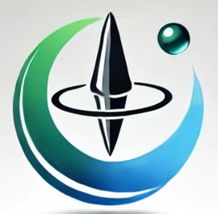
Holosense Technology Co. Ltd Hong Kong
Director & CTO (since Dec. 2024). Field-deployable holographic and polarimetric instruments for micro-/nano-plastic monitoring and label-free particle analytics — awarded a Geneva Silver Medal and an iCan Gold Medal.
Awards & Honors
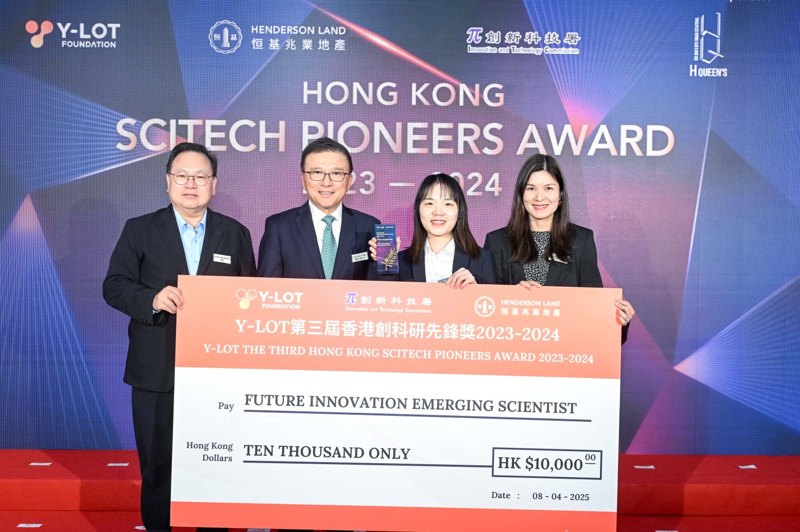
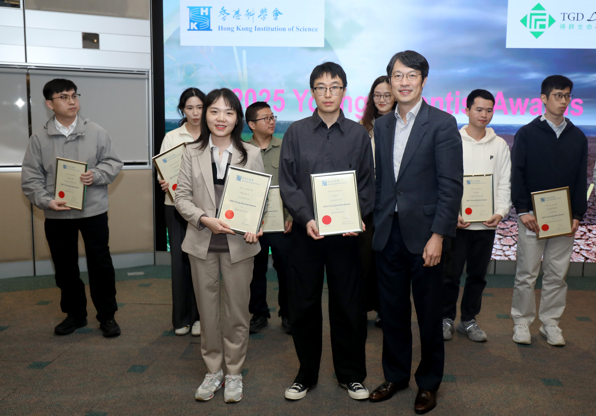
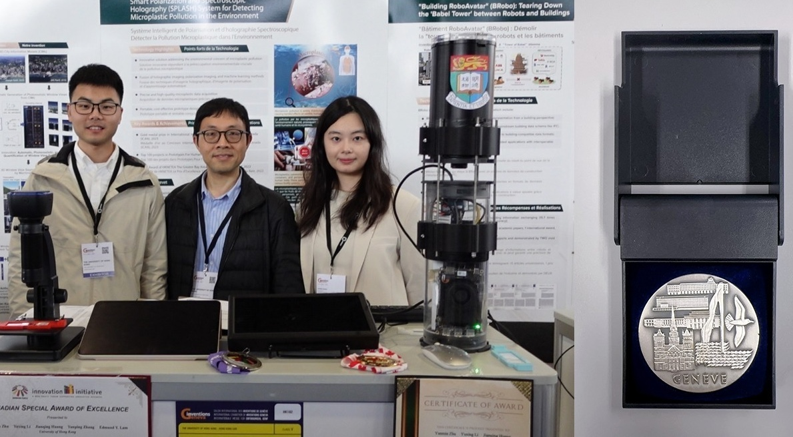
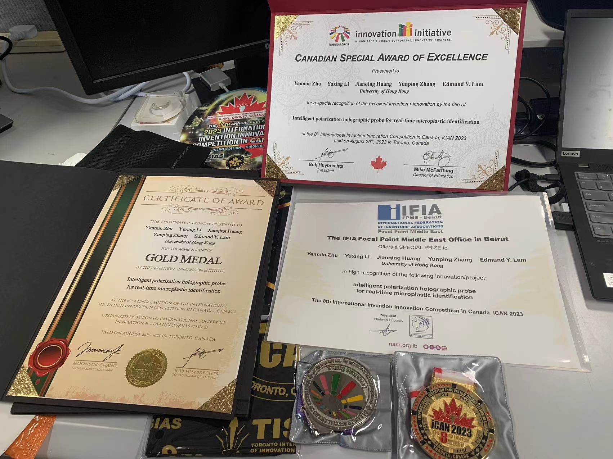
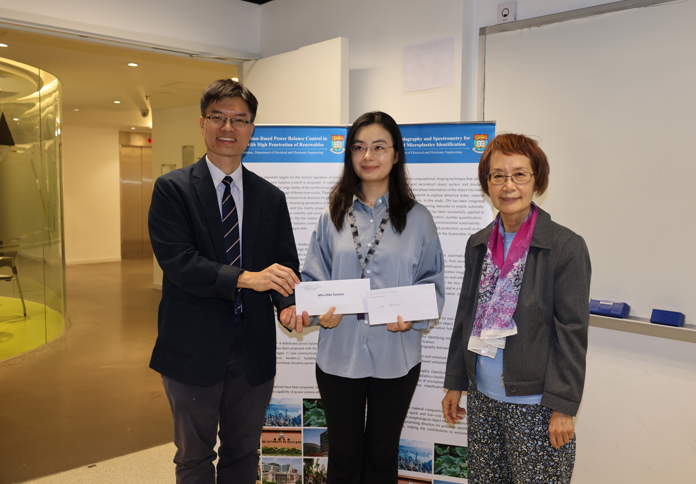
th Anniversary Sustainability / Innovation Prize">
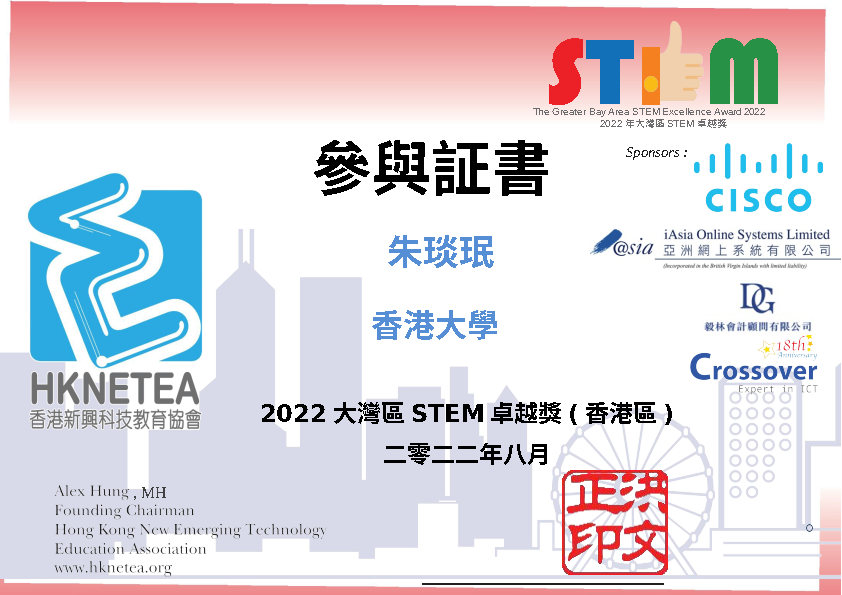
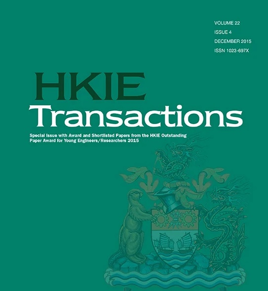
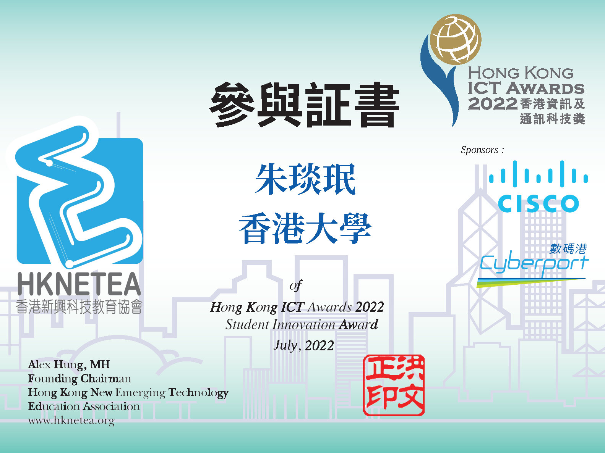
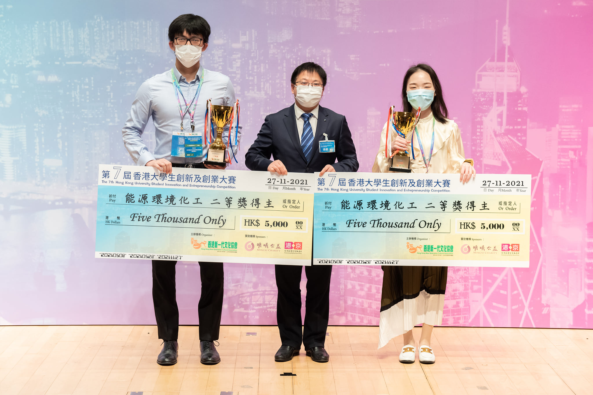


Secured funding & research programmes
Funded projects (PI / key contributor)
| AI for Pandemic Prevention: Energy- and Data-Efficient Machine Learning for Rapid Point-of-Need Diagnostics against Climate-Change-Induced Global Health Threats MIT–Google Research Fund | USD 500,000 2023–2025 |
| A Generative-AI-based Deep Speckle Holographic Platform for Accurate Nanoparticle Characterization HKU Seed Fund for Basic Research | HKD 150,000 2024–2026 |
| SweatLens: AI-Driven Holographic Sweat Analytics Wearable Device for Early Health Surveillance HSITP SPIN Fund | HKD 150,000 2026–2027 |
Ongoing research programmes — HKU
- Intelligent Computational Optics for Combating Microplastics and Nanoplastics Pollution (2024–present)
- Enabling Lensless Low-Light Imaging with Computational Optical Imaging (2022–present)
- Smart Polarization Holography and AI for Material Discrimination and Physical Fingerprint Analysis (2021–2023)
- Intelligent Computational Diagnosis with Neural Networks (2019–2022)
Earlier research training
- Imperial College London — Michelson interferometry and OCT for 3D and high-resolution image reconstruction (2018)
- KU Leuven — Intelligent gesture-touch evaluation for Alzheimer’s disease diagnosis and follow-up assessment (2017)
- KU Leuven — IoT design with short-distance high-speed LoRa communication (2016)
Project webpages
Editorial, committee & review roles
Editorial Boards
- Editor — Frontiers in Lab on a Chip Technologies (2026–present)
- Editor — Photonics, MDPI (2025–present)
Committees & Chairing
- Program Committee — 26th IEEE/ACM International Symposium on Cluster, Cloud and Internet Computing (CCGrid 2026)
- Session Chair — Multimodal Sensing and AI, SPIE Optical Metrology Symposium (2023)
Memberships
- Optica (formerly OSA), 2020–present
- SPIE, 2020–present
- HKIS, 2022–present
Peer review for leading journals
- Optica Publishing Group (2021–present): Optica, Optics Express, Applied Optics, OSA Continuum
- ACS Publications (2021–present): ACS Photonics, Analytical Chemistry, ACS Nano
- Springer Nature (2025–present): npj Clean Water, Scientific Reports
- IEEE (2019–present): IEEE TCSVT, IEEE Transactions on Industrial Informatics, IEEE Journal of Oceanic Engineering
Educating the next generation
Courses at The University of Hong Kong
- ELEC6008 / ELEC8107 — Pattern Recognition and Machine Learning (RPg), 2026–present
- ELEC7078 — Advanced Topics in EEE: Biomedical Intelligence for Imaging and Informatics (PhD), 2026
- ELEC6604 — Neural Networks, Fuzzy Systems and Genetic Algorithms (PhD), 2021–2023
- ELEC3848 / 3848B/C — Integrated Design Project (UG), 2019–2021
- ELEC4848 — Senior Year Project, 2025–present
Certification in Teaching and Learning in Higher Education, 2020
Mentored students & interns
- Xi Zeng — UC Davis (2026)
- Hongi Siu, Sike Jia — Tsinghua University (2025)
- Jinkun Chen — Sun Yat-sen University
- Jiaying Zhu, Binghao Chen, Weiyi Chen, Chun Kit Li, Kai Yuen Kelvin Lam, Jiarui Hu — The University of Hong Kong (2025)
Mentees have co-authored papers in ACS Photonics, Optics Express, Scientific Reports and SPIE/Optica proceedings, and have won innovation-competition prizes.
Let’s build the next generation of imaging
Openings
I am actively recruiting PhD students, postdoctoral fellows, research assistants and visiting/interning students to work on:
- Physics-informed & generative AI for imaging and spectroscopy
- Holographic, polarimetric and speckle-based optical instruments
- Wearable / edge-AI biomedical and environmental sensing
- Programmable optical computing systems, metasurface design, diffractive neural networks
Backgrounds welcome: optics/photonics, electrical engineering, computer science, biomedical engineering, applied physics, materials.
Please email your CV, transcripts and a short statement of interest to ymzhu@hku.hk.
Contact
Prof. Yanmin Zhu
Room R512, Chow Yei Ching Building
The University of Hong Kong, Pokfulam, Hong Kong SAR
Email: ymzhu@hku.hk | vicymzhu@gmail.com